Diagramme bedienen
Bedienseite, Stand 06.10.2026. Wie man eine Tabelle lädt, den Spalten Rollen gibt, einen Diagrammtyp wählt und Linien, Konturen und 3D-Flächen zeichnet; wie man Achsen, Farbskala, Iso-Linien und Datenpunkte einstellt, Spalten berechnet und alles speichert. Die Bilder sind Bildschirmfotos der App mit einem frei erfundenen Prüfstandslauf eines Verdichters (sieben Drehzahlen, je elf Betriebspunkte).
Das Fenster
Die App öffnet man im Menü Anwendungen mit Neues Diagramm… oder mit Alt+D; eine Datei .csv öffnet sie direkt.
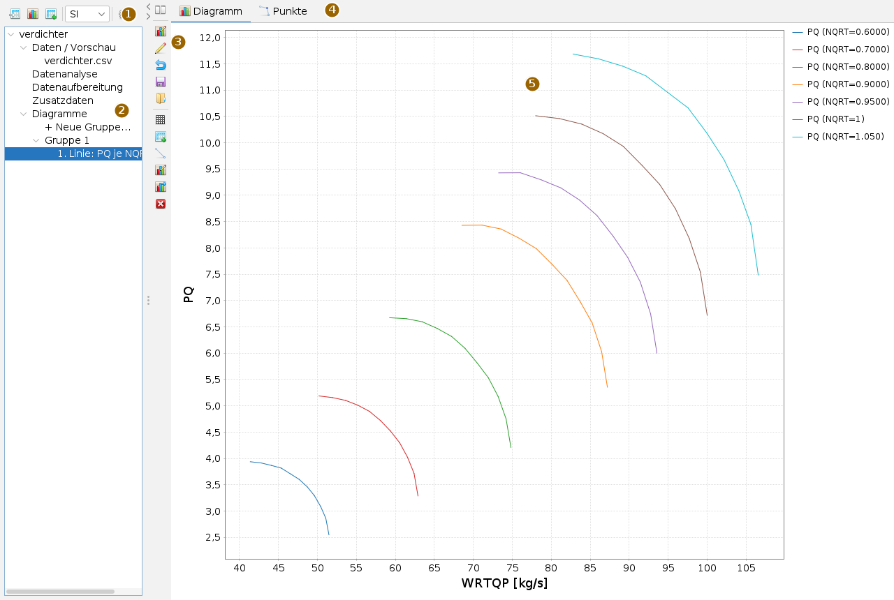
Links steht der Navigator: die Datenquelle mit ihren Unterpunkten und darunter die Diagramme, geordnet in Gruppen. Was man im Navigator wählt, erscheint rechts in der Arbeitsfläche – die Ladekarte, die Tabelle, die Analyse, die Definition einer Gruppe oder ein Diagramm. Der Pfeil an der Trennlinie klappt den Navigator ein.
| Knopf (Tooltip) | Wirkung |
|---|---|
| Laden | Öffnet die Ladekarte (wie ein Klick auf Daten / Vorschau). |
| Diagramm | Legt eine neue Diagrammgruppe an und zeigt ihre Definition. |
| Zusatzdaten (Umschalter) | Solange er gedrückt ist, kommen geladene Dateien als Zusatzdaten dazu, statt die Hauptdaten zu ersetzen. |
| SI / Imp / RR | Anzeigeeinheiten für Werte und Achsen; Diagramme danach neu zeichnen. |
| Einstellungen… | Karte mit den Vorgaben der App. |
Ein Diagramm in sechs Schritten
- Laden: in der Ladekarte die CSV-Datei wählen und das Trennzeichen prüfen; die Vorschau zeigt die Spalten.
- In Arbeitsdaten übernehmen drücken. Die App schreibt die Tabelle in eine H2-Datei neben der CSV, der Navigator zeigt die Quelle.
- Gruppe 1 unter Diagramme anklicken: rechts erscheint die Definition.
- Oben im Auswahlfeld eine Spalte suchen und mit Hinzufügen in die Tabelle holen, für jede Spalte, die das Diagramm braucht.
- In der Spalte Type jeder Zeile eine Rolle geben, etwa
as x,as y,as f, und unten einen Diagrammtyp anklicken. - Plotten (Symbol links neben der Tabelle). Das Diagramm erscheint unter seiner Gruppe im Navigator.
Daten laden
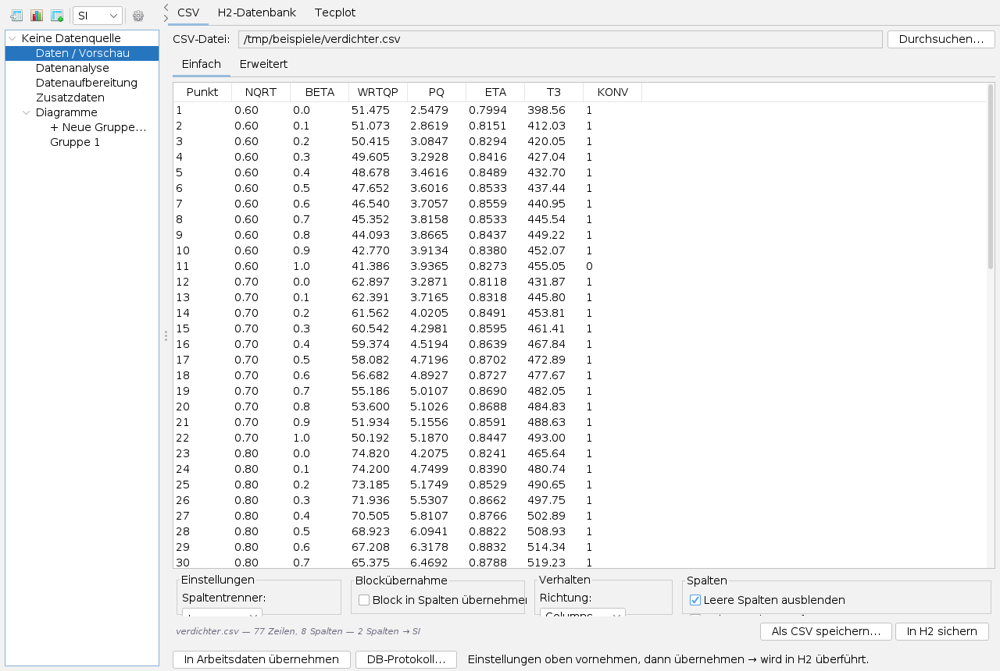
Die Ladekarte hat drei Reiter:
- CSV: Durchsuchen… wählt die Datei. Unter Einfach stehen Spaltentrenner, Blockübernahme, Richtung (Zeilen und Spalten tauschen) und das Ausblenden leerer Spalten; unter Erweitert Typen und Einheiten je Spalte. Eine Kopfzeile der Form
NAME [Einheit]liefert die Einheit, im BeispielWRTQP [kg/s]undT3 [K]; sie werden auf SI umgerechnet. Die Zeile unter der Vorschau nennt Zeilen, Spalten und Umrechnungen. - H2-Datenbank: eine fertige H2-Datei (
.mv.db) und eine Tabelle darin. Sie wird ohne Kopie eingebunden; Einheiten kommen aus der Tabelle<TABELLE>_UNITS. - Tecplot: eine
.plt-Datei, auf Wunsch mit ihrer Layoutdatei (.plt.layoder.lay). Das Kästchen Layoutdatei verwenden ist nur bedienbar, wenn eine daneben liegt; dann übernimmt die App Achsen, Kurven, Farben und Symbole aus dem Layout, bei mehreren Rahmen je Rahmen ein Diagramm.
In Arbeitsdaten übernehmen macht die Tabelle zur Datenquelle. Danach liest die App Spalten erst, wenn ein Diagramm sie braucht, und filtert Zeilen in der Datenbank. DB-Protokoll… zeigt die Befehle an die Datenbank. Tabellen anderer Apps (etwa der EPDS-App) kommen ohne Ladekarte herein.
Zusatzdaten: Ist der Umschalter in der Werkzeugleiste gedrückt, kommt eine weitere Tabelle unter Zusatzdaten dazu, etwa ein zweiter Rechenlauf für den Vergleich. Rechtsklick auf einen Eintrag entfernt sie wieder.
Der Navigator
- Daten / Vorschau: die Ladekarte; darunter die übernommene Datei mit der Tabelle, seitenweise geblättert.
- Datenanalyse und Datenaufbereitung: siehe Analyse und Aufbereitung.
- Diagramme: + Neue Gruppe… legt eine Gruppe an. Eine Gruppe trägt eine Definition (Variablen, Rollen, Typ); jedes Plotten fügt ihr ein Diagramm hinzu, nummeriert und nach Typ und Variablen benannt. So lassen sich Abwandlungen nebeneinander halten.
- Rechtsklick auf eine Gruppe oder ein Diagramm: Gruppe löschen, Diagramm löschen, Kopieren.
Variablen und Rollen
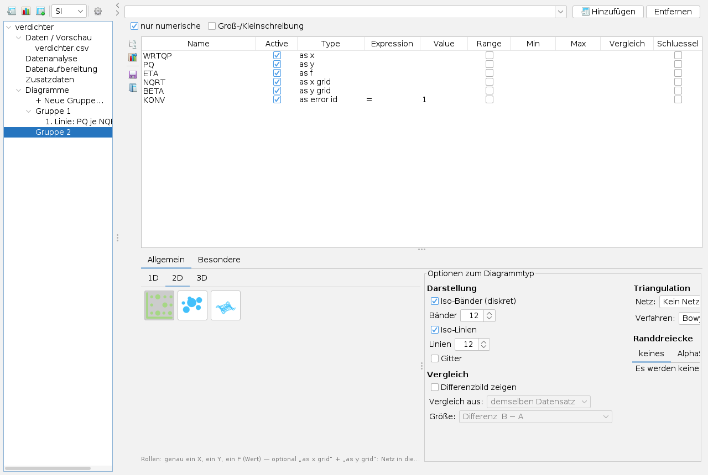
Die Definition zeigt oben das Suchfeld mit Hinzufügen und Entfernen; nur numerische und Groß-/Kleinschreibung grenzen die Liste ein. Die Tabelle hat je Variable eine Zeile:
| Spalte | Bedeutung |
|---|---|
| Active | Zeile zählt mit; ohne Haken bleibt sie stehen, wirkt aber nicht. |
| Type | die Rolle (Tabelle unten) |
| Expression, Value | Bedingung: =, >, >=, <, <= mit einem Wert; nur Zeilen, die sie erfüllen, gehen ein. |
| Range, Min, Max | Bedingung als Bereich |
| Vergleich, Schluessel | Bedingung für den Vergleichsstand und die Spalten, über die Punkte beider Stände einander zugeordnet werden (siehe Vergleich). |
| Rolle | Wirkung |
|---|---|
as x | waagrechte Achse |
as y | bei Linien: trennt die Kurven, je Wert eine (im Bild je Drehzahl); bei Kontur und 3D: senkrechte Achse |
as z | dritte Achse bei 3D-Punkten und Volumen |
as f | Funktionswert: die Kurve, die Farbe der Kontur, die Höhe der Fläche; bei Linien auch mehrere |
as f right | Funktionswert auf einer zweiten, rechten y-Achse (nur Linientypen) |
as x grid, as y grid, as z grid | in welchen Spalten das Netz entsteht, etwa Drehzahl mal Beta bei Kennfeldern, statt in den Bildkoordinaten |
as error id | Konvergenzmarke: erfüllt die Bedingung = konvergiert. Die Zeile filtert nicht, sie kennzeichnet nur. |
as unique id | Kennung eines Punkts; geht nicht ins Bild ein |
as constraint | nur Bedingung, keine Achse |
Rollen werden nicht aus Spaltennamen geraten. Die Zeile unter den Typen nennt, welche Rollen der gewählte Typ braucht. Die vier Symbole links neben der Tabelle: Struktur prüfen (ob die Daten ein geordnetes Gitter bilden), Plotten, Layout speichern… und Layout laden… – das Layout ist der Stand der Tabelle als XML und wird beim Laden nach Spaltennamen zugeordnet.
Diagrammtyp
Unter der Tabelle wählt der Reiter Allgemein mit 1D, 2D und 3D den Typ, ein Klick auf ein Bild genügt; nicht passende Typen sind grau. Der Reiter Besondere enthält das Joule- oder T-s-Diagramm mit seinem Stationseditor. Rechts stehen die Optionen zum Diagrammtyp.
| Gruppe | Typen |
|---|---|
| 1D | Linie, Multilinie, Streuung, Fläche, Stufen, Zeitreihe, Kerzen (OHLC), Wind, Balkenplan, Balken, Balken gestapelt, Wasserfall, Kreis, Spider, Netzdiagramm, Polardiagramm, Histogramm, Box-Whisker |
| 2D | 2D-Kontur, Blasen, 3D-Höhenfläche (z = f(x, y)) |
| 3D | 3D-Streudiagramm, 3D-Linie, 3D-Balken, 3D-Fläche, 3D-Kreis, 3D-Volumen (Iso-Flächen) |
| Besondere | Joule (T-s) mit Stationen, Strömen und Mischern |
Bei der Kontur stellen die Optionen ein: Iso-Bänder (diskret) und ihre Zahl, Iso-Linien und ihre Zahl, Gitter, unter Triangulation das Netz (kein Netz = Gitterkontur, Triangulierung oder Zellstruktur aus zone/i/j) mit dem Verfahren und unter Randdreiecke das Randverfahren, das lange Dreiecke am Rand verwirft. Wer Triangulierung wählt, bekommt sie; weicht die App aus, sagt sie es mit Grund.
Linien
Im Bild oben: WRTQP als x, PQ als Funktionswert und NQRT als as y – jede Drehzahl wird eine eigene Kurve, die Legende nennt ihren Wert. Mehrere Spalten mit as f ergeben mehrere Kurven je Gruppe; as f right legt eine davon auf eine rechte Achse. Y logarithmisch steht in den Optionen zum Typ. Der Reiter Punkte neben Diagramm legt Punktreihen aus der Tabelle über das Bild, mit eigenen Bedingungen.
Konturen
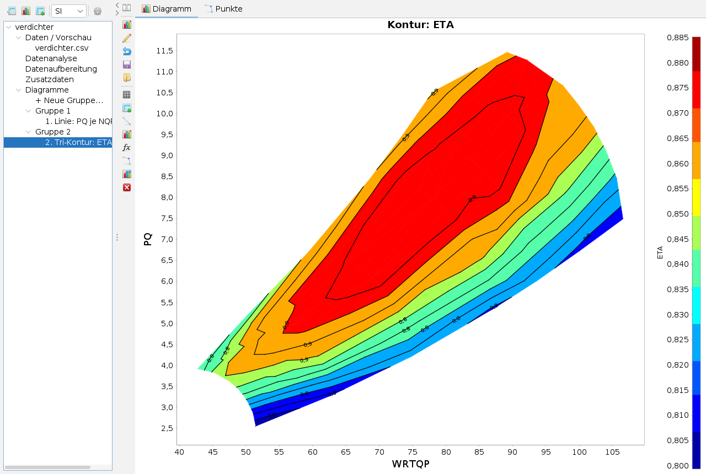
Bei geordneten Daten wie einem Kennfeld gehören die Gitterrollen dazu: Ohne sie verbände die Triangulierung im Bild Durchsatz gegen Druckverhältnis Punkte benachbarter Drehzahlen über die Lücke hinweg und erfände eine Fläche jenseits des letzten Punkts. Mit as x grid und as y grid entsteht das Netz dort, wo die Daten geordnet sind.
Die Diagrammleiste
Die senkrechte Leiste zeigt nur die Knöpfe, die der Typ des Diagramms braucht. Die Knöpfe tragen Symbole, der Tooltip nennt die Wirkung. Die Karten öffnen sich im Optionsbereich zwischen Leiste und Diagramm; der oberste Knopf blendet ihn ein und aus.
| Tooltip | Wirkung | bei |
|---|---|---|
| Optionen ein-/ausblenden | Optionsbereich ein oder aus | allen |
| Chart-Optionen | Titel, Achsen, Legende, Farbskala | allen |
| Variablen bearbeiten | zurück zur Definition; Plotten ändert dann dieses Diagramm | allen |
| Auf Ursprung zurücksetzen | verwirft Änderungen am Diagramm | allen |
| Speichern, Laden | Einstellungen des Diagramms als XML (2D *.chart.xml, 3D eigenes Format) | Linie, Kontur, 3D |
| Plot | Hintergrund, Gitterlinien | Linie, Kontur |
| Datenpunkte | Messpunkte, Werte, nicht konvergierte | Linie, Kontur |
| Marker | Wertelinien, Bänder, Polygone | Linie, Kontur |
| Annotation | Text und Zeiger | Linie, Kontur |
| Iso-Linien | Linien gleicher Werte, auch einer anderen Variablen | Kontur |
| Netz nachbessern | einzelne Dreiecke behalten oder verwerfen | Kontur (trianguliert) |
| Hüllkurve | Linien, Flächen und Beschriftungen aus einer .hkx-Datei | Linie, Kontur |
| Dekorationen entfernen | Marker, Annotationen und Hüllkurve weg | Linie, Kontur |
Chart-Optionen und Farbskala
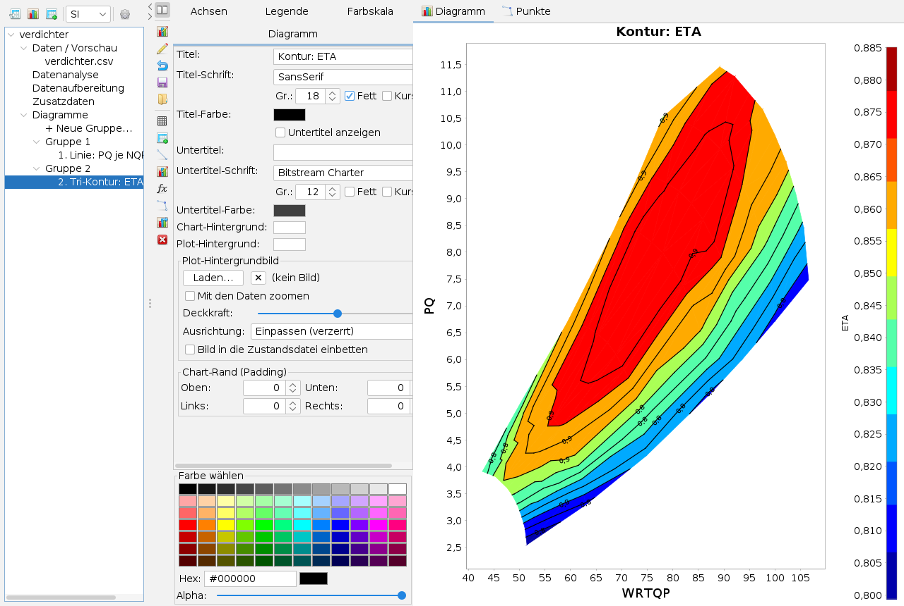
Reiter Diagramm: Titel und Untertitel mit Schrift und Farbe, Hintergründe, ein Plot-Hintergrundbild (etwa ein eingescanntes Kennfeld) mit Deckkraft, Ausrichtung und Mit den Daten zoomen, auf Wunsch in die Zustandsdatei eingebettet, sowie die Ränder. Reiter Achsen: je Achse Beschriftung, Bereich, Teilung und Format. Reiter Legende: Lage, Rahmen, Schrift. Die Farbe wählen-Tafel unten gilt für das zuletzt angeklickte Farbfeld.
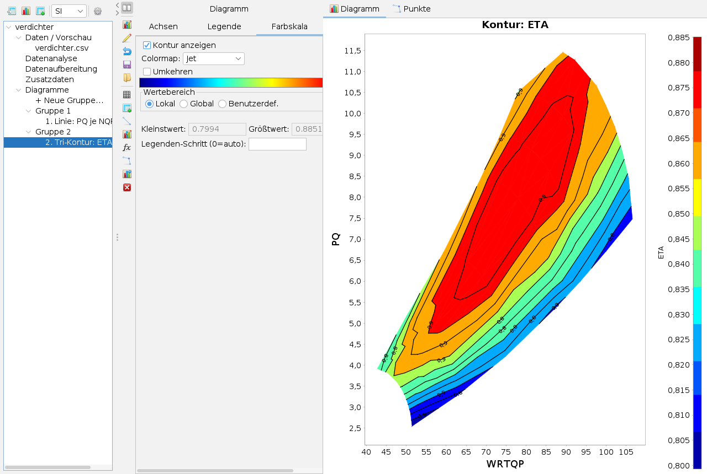
Wertebereich: Lokal nimmt den Bereich des Diagramms, Global den des ganzen Datensatzes (gleiche Farben in mehreren Diagrammen), Benutzerdef. die eingetippten Grenzen. Ein fester Bereich gilt nur, wenn er eingestellt wurde. Legenden-Schritt teilt die Farbskala.
Iso-Linien
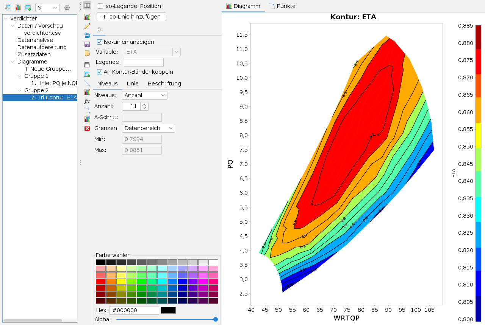
Jeder Reiter ist ein Satz Iso-Linien; + Iso-Linie hinzufügen legt einen weiteren an, etwa für eine andere Variable auf demselben Netz. An Kontur-Bänder koppeln legt die Linien genau auf die Bandgrenzen. Sonst wählt Niveaus zwischen Anzahl und Δ-Schritt, Grenzen zwischen Datenbereich und eigenen Werten. Die Reiter Linie und Beschriftung stellen Strich, Farbe je Stufe, Beschriftungsart und den Legendentext ein; Iso-Legende zeigt eine eigene Legende.
Datenpunkte
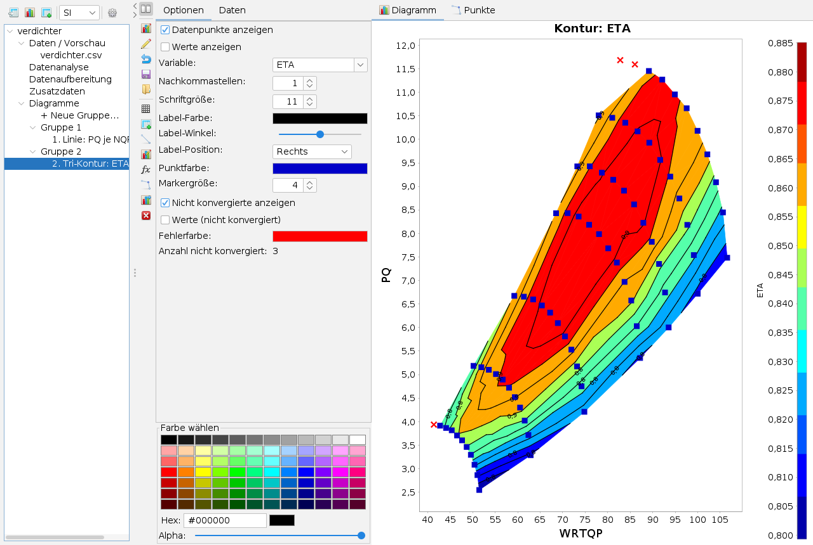
Datenpunkte anzeigen zeichnet die Punkte der Tabelle über das Diagramm, Werte anzeigen schreibt den Wert der gewählten Variable daneben. Mit der Rolle as error id unterscheidet die App konvergierte und nicht konvergierte Punkte und zählt letztere. Im Reiter Daten der Karte steht die ganze Zeile eines Punkts, den man im Diagramm anklickt; das Fadenkreuz hebt ihn hervor.
Netz nachbessern, Marker, Hüllkurve
- Netz nachbessern (nur triangulierte Konturen): Verwerfen – ein Klick ins Bild entfernt ein Dreieck; Aufnehmen holt ein verworfenes zurück. Die Liste nennt die Ausnahmen, sie werden mit dem Diagramm gespeichert.
- Marker: waagrechte und senkrechte Wertelinien, Intervallbänder und Polygone. Min/Max-Marken nennen den Wert aus dem Bild.
- Hüllkurve: Grenzlinien und Flächen aus einer
.hkx-Datei, einzeln einstellbar (Farbe, Strich, Deckkraft, Schrift, Ort, Winkel) über einen Häkchenbaum.
Vergleich zweier Stände
In den Optionen der Kontur zeigt Differenzbild zeigen den Unterschied zweier Datenstände. Vergleich aus wählt den Stand: denselben Datensatz mit anderen Bedingungen (Spalte Vergleich der Tabelle) oder eine Zusatztabelle. Größe: Differenz B − A, relative Abweichung oder Verhältnis. Punkte werden über die Spalten mit Haken in Schluessel einander zugeordnet; Punkte ohne Partner und mehrdeutige meldet die App.
3D
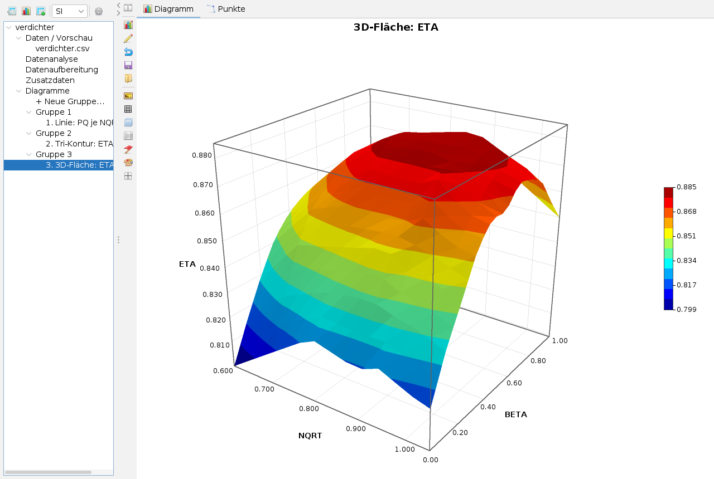
3D-Diagramme haben eine eigene Leiste: Ansicht (Kamera, Tiefe, Schnittebene), Achsen, Legenden, Titel, Schriften, Hintergrund, Marken und Bereiche, Thema (hell, dunkel, Druck), Schnitte in x, y und z und beim Volumen Iso-Flächen (f = const). Die Karte direkt nach dem Plotten stellt Oberfläche, Farbskala, Wertebereich und Iso-Bänder ein. Die Maus dreht und zoomt das Bild. Das Volumen nimmt die Zellstruktur, wenn die Daten sie hergeben, sonst Delaunay.
Analyse und Aufbereitung
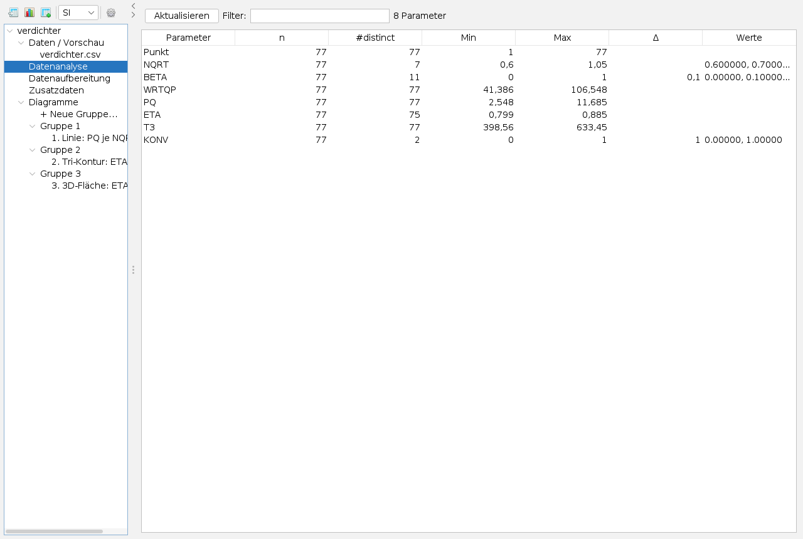
Datenanalyse zählt je Spalte Werte, verschiedene Werte, Kleinst- und Größtwert, den Schritt bei gleichmäßigen Stufen und listet wenige Werte auf. Daran sieht man, welche Spalte sich als as y oder Gitterrolle eignet. Filter grenzt die Liste ein, ein Klick auf den Kopf sortiert.
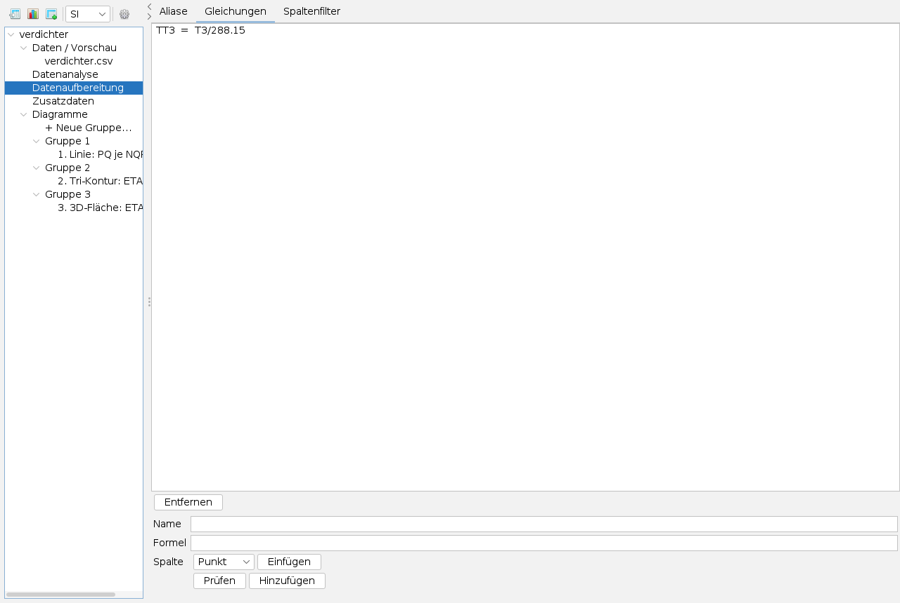
Datenaufbereitung hat drei Reiter: Aliase (Anzeigename je Spalte, erscheint an Achsen und Legenden), Gleichungen (neue Spalten aus vorhandenen: Name, Formel, Prüfen, Hinzufügen) und Spaltenfilter (Spalten ausblenden, ohne Diagramme zu stören). Gleichungen dürfen aufeinander aufbauen; gespeichert wird die Formel, nie die Werte.
Speichern und Weitergeben
- Diagrammdefinition: Rollen, Aliase, Gleichungen, Spaltenfilter und Diagrammoptionen als XML, ohne die Daten – so lässt sich dieselbe Darstellung auf einen neuen Rechenlauf anwenden. Dateien der ersten Fassung werden weiter gelesen.
- Einstellungen eines Diagramms über Speichern und Laden in der Diagrammleiste.
- Bild: Rechtsklick ins Diagramm – Kopieren, als PNG oder SVG speichern, Drucken.
- Arbeitsstand: Beim Sichern des Arbeitsbereichs merkt sich die App den Pfad der Datenquelle und die vollständige Definition und stellt beides beim nächsten Start wieder her.
- Einstellungen der App (Zahnrad) liegen in
settings.propertiesneben dem Programm, damit sich der Ordner mitnehmen lässt.
Tastatur und Maus
Alt+D öffnet die App. Ziehen mit der Maus im Diagramm zoomt auf einen Ausschnitt; der Ausschnitt bleibt, und die Zoom-Rücknahme kehrt zu eingetippten Achsengrenzen zurück. Ein Klick auf einen Datenpunkt zeigt seine Zeile. In 3D drehen Ziehen und Mausrad. Rechtsklick im Navigator und im Diagramm öffnet die Kontextmenüs.
Grenzen
- Im Joule-Diagramm fehlt die Eingabe für den berechneten Mischer; der Rechenkern ist fertig.
- Die zweite y-Achse gibt es nur bei den Linientypen.
- Nicht alle Optionsdialoge des Vorgängerprogramms sind als Karten umgesetzt.
Was die App kann und worauf sie aufbaut, steht in der Übersicht.